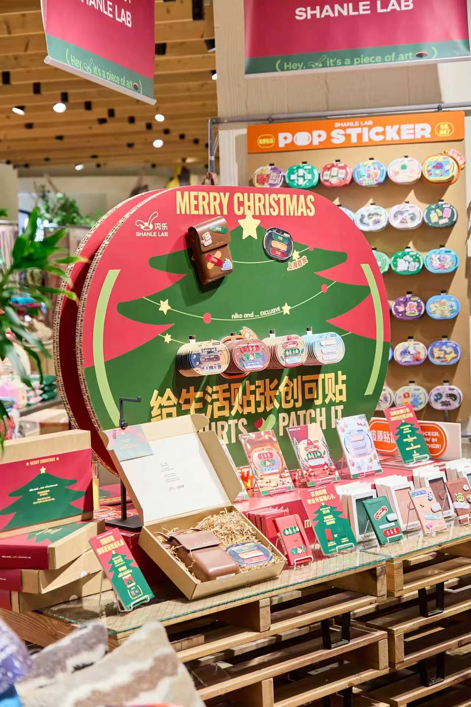
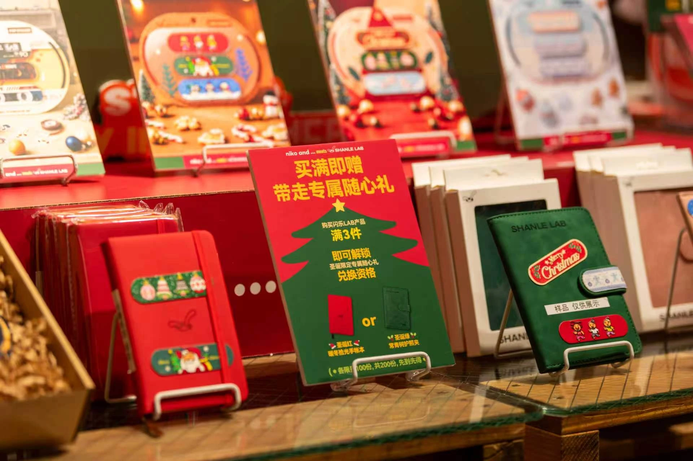

Store display / 圣诞联名快闪 · 现场实装
niko and…
给生活贴张创可贴
双面纸展具、柱面商品墙与日常应用，组成一处可以逛、可以选的圣诞联名现场。
上海 · niko and… 淮海中路店 / SHANLE LAB
本组最终现场照片于2026年11月21日收录；该日期为归档日。
双面纸展具柱面挂货产品应用

给生活贴张创可贴
在niko and… 淮海中路店，将贴纸选款、产品应用与圣诞赠礼放在同一个现场。双面纸展具成为中岛主角，原有叉车板台面承接礼盒与样品，柱子的相邻两面继续展示POP STICKER与ART STICKER。


一面讲主题，一面选商品。
双面椭圆纸展具以红绿印刷面延续圣诞主题，边缘保留瓦楞纸芯。正面突出联名与特色产品，背面设置26个挂货位置；台面上的小包、护照夹与手账展示贴纸的实际用法。


围绕方柱，保留两类产品的选择。
水管框架围柱落地，两面纸板开方孔插钩挂货。橙色品类顶标区分POP STICKER与ART STICKER；实装分别设置36个与35个挂货位置，深叠挂与侧边应用样品共同构成可浏览的商品墙。


让包装之外的使用方式，也看得见。
敞口礼盒、小包和护照夹把贴纸的使用与赠礼场景直接摆在商品旁。主题延伸到礼盒套、明信片和活动台卡，让来访者从一张贴纸继续看到完整的联名表达。



从陈列台，延伸到咖啡与纸品。
柜台活动导览、关注赠明信片与咖啡区联动台卡，将圣诞主题接入店内不同动线。消费者可以在选款、查看应用与领取纸品之间，逐步了解这次合作。


DESIGN TO INSTALLATION
从方案比较，到实际落地。
经历水管与纸展具比较、结构校正、纸样制作和模型迭代，最终完成这组中岛与柱面陈列。这里的照片均为用户确认的最终现场实拍；设计模型与现场结果分开记录。
查看18页项目工作报告 ↗Next project / 下一个项目
查看全部场所